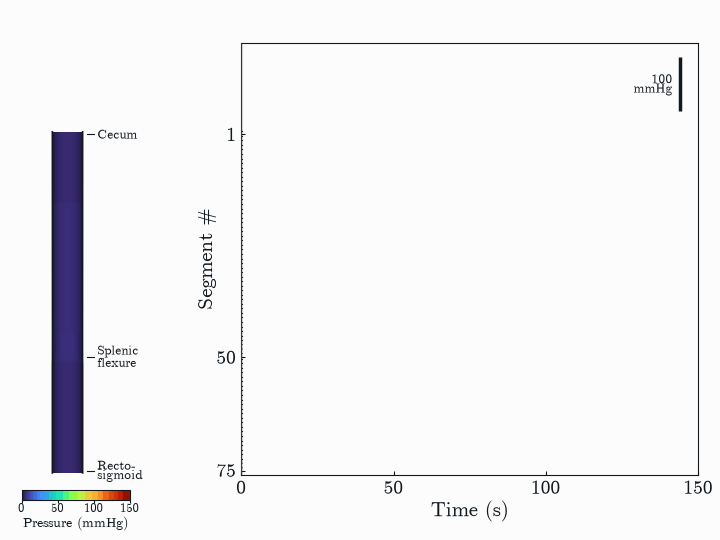
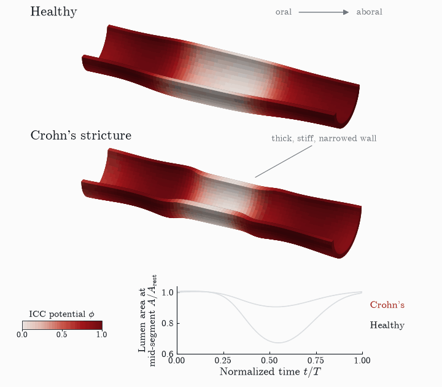
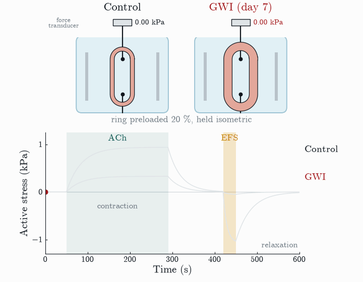

Postdoctoral Researcher — Aerospace & Mechanical Engineering, University of Notre Dame
I am a postdoctoral researcher at the University of Notre Dame, in the CoMMaND Lab. I develop computational models of how inflammation and neuromuscular dysfunction drive tissue remodeling and impair motility in the gastrointestinal tract, with the aim of elucidating the mechanisms underlying motility disorders and informing their diagnosis and treatment.
I completed my PhD at the University of Denver's Center for Orthopaedic Biomechanics, where I developed patient-specific soft tissue models for surgical planning, and previously worked in product design at Microsoft.



Wall Stiffening Is a Primary Contributor to Motility Loss in Crohn’s Disease: An Electromechanical Modeling Study
A Biophysical Model of Human Colonic Motor Pattern Generation in Health and Disease
A Biomechanical Model of Inflammation-Driven Colon Hypertrophy and Dysmotility: Application to Gulf War Illness
In Vitro Verification of Simulated Daily Activities Using Implant-Specific Kinematics from In Vivo Measurements
Simultaneous Evaluation of Tibiofemoral and Patellofemoral Mechanics in Total Knee Arthroplasty: A Combined Experimental and Computational Approach
Instantaneous Generation of Subject-Specific Finite Element Models of the Hip Capsule
Specimen-Specific Finite Element Representation of Implanted Hip Capsule
Comparison of Four Modular TKA Prosthesis Designs Using Static Finite Element Analysis
From industry experience at Microsoft
Adjustable Computer Mouse
Device Cable Length Adjustment
In-Ear Authentication